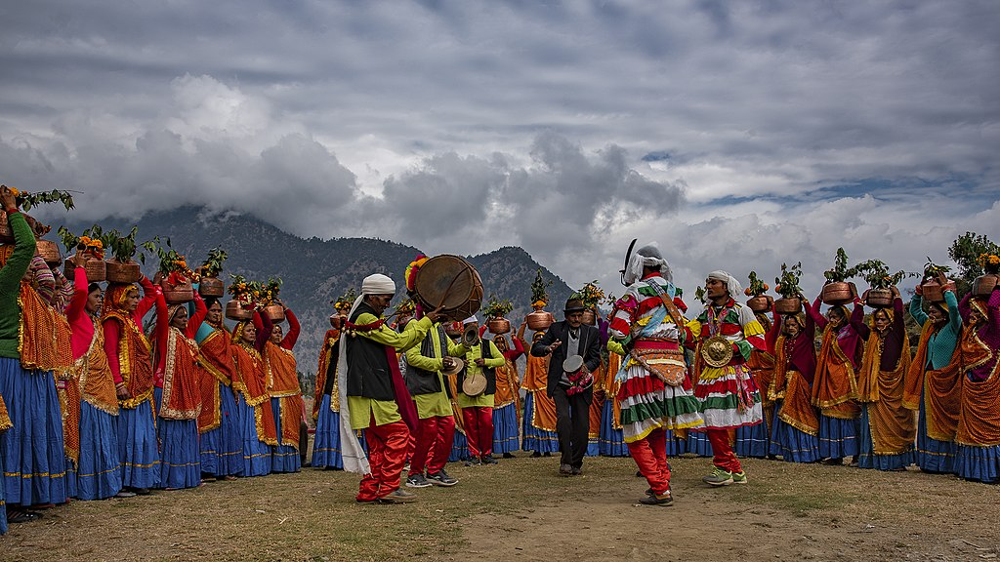
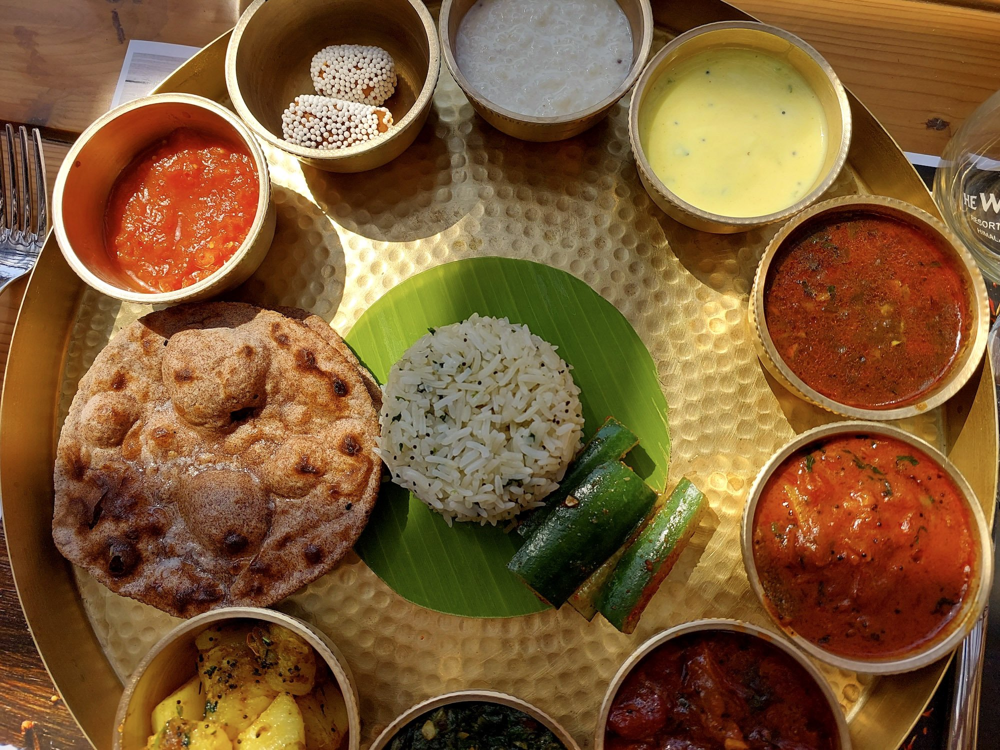
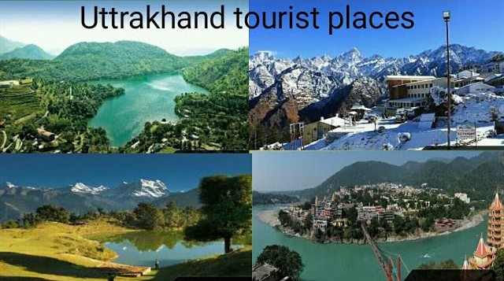
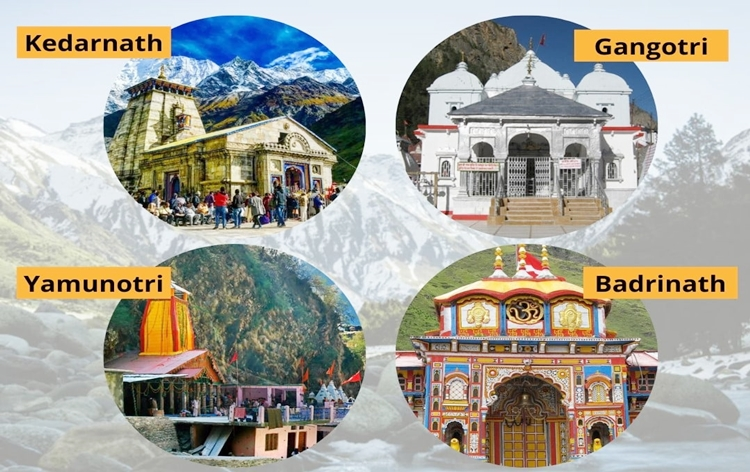

Welcome to my blog! I'm Rohit Panwar and I live in Uttarakhand. Today, through this blog let me showcase the
true beauty of my lovely Hometown - UTTARAKHAND. Through this blog you will get to know all about its
Culture, Food, Heavenly Places to visit etc. I don't know if you are a mountain lover or not but I know
after reading this blog your heart and mind will surely want to visit Uttarakhand once in your lifetime. So
let's explore this Beautiful place I'm talking about through this blog
Blog 1:-
Culture of Uttarakhand
Uttarakhand is known as much for its natural beauty as for its people and their culture. The state's
unique culture encompasses traditional rites, ritual, beliefs, folklore, customs and language.

The warm and friendly residents of the states, who also call themselves Pahari, celebrate throughout
the year, marking their festivals with music and dance.
Igas or Igas Diwali is celebrated 11 days after Diwali. Folklore says that the news of Lord Rama's
return to Ayodhya from exile reached the hilly regions of Kumaon and Garhwal 11 days late. So, the
people celebrated the Lord's victory 11 days after the rest of the country did.
The vibrant Ghee Sankranti festival is held in August. Mostly celebrated in villages by farmers, it
marks the harvesting season to show gratitude to nature and gods for a good harvest and prosperity.
Dishes are made with ghee (clarified butter).
The spring harvest festival Phool Dei is celebrated in mid-March. During this festival young girls
pluck flowers to decorate their houses. A traditional dessert made of flour, curd and jaggery are
made and offered to everyone.
Blog 2:-
Food of Uttarakhand
The Indian state of Uttarakhand is one of those states whose cuisine is simple and made from locally
grown ingredients. The two distinct areas, Kumaon and Garhwal, offer palates of tasty dishes that are
also high in nutrients.

Bhang Ki Chutney gives the tangy tamarind taste. It remains a popular Uttarakhand food to be tasted
as recommended by locals to travellers. It is used as a sauce made from a combination of spices and
condiments.
Phaanu emerged in the Garhwal region of Uttarakhand. It's a complicated preparation, but it's really
tasteful. It is made by combining lentils of various kinds, which are soaked in water overnight.
It's a very popular Garhwali dish made of Urad or Kali Dal and therefore contains a lot of protein.
It might take some time for some people to digest because of its high protein content, but this dish
has a very earthy flavour that is definitely worth trying.
A delicious dessert, Jhangore ki Kheer is popular in the Garhwal region of Uttarakhand. The dish is
prepared using a form of millet called Jhangore, which is cooked with a number of dry fruits and
milk, which is the main ingredient that makes it rich in texture and nutrition. Jhangor Ki Kheer has
an unforgettable taste and is a must-try after a strong meal of Garhwali cuisine.
Blog 3:-
Tourist Places of Uttarakhand
Be it river rafting in the Ganges, trekking to some of the fascinating peaks, skiing through some of the
picturesque slopes, enjoying a cable-car ride, or soaking in the mesmerising views of the Himalayas,
Uttarakhand is a dream destination for all. Here are the top destinations to travel to in Uttarakhand.

The small yet picture-perfect town of Auli is India's premier ski resort destination. Originally
developed as a paramilitary base, Auli's skiing slopes are popular among tourists and professionals
alike. In winter, Auli hosts several snow adventure events.
Dehradun is surrounded by high mountains and lush Sal forests. Known for its pleasant year-round
weather and scenic surroundings, the city is a gateway to several popular hill-stations like
Mussoorie and pilgrimage sites like Haridwar and Rishikesh.
Fast emerging as a gem among the major travel destinations in Uttarakhand, Dhanaulti offers a
peaceful, relaxed and laid-back atmosphere. Dhanaulti is located at an altitude of 2,250 m, and is
far away from the hustle-bustle, busy market places and pollution.
Mussoorie, also known as Queen of the Hills, is among the most popular hill stations of the country.
A Britisher, Captain Frederick Young, accompanied by an official named FJ Shore, had climbed up the
hill from the Doon valley in 1827
Blog 4:-
Spiritual Places of Uttarakhand
There are four pilgrim-destinations namely Yamunotri, Gangotri, Kedarnath, and Badrinath, collectively
known as Char Dham. These pilgrimage centres draw large number of pilgrims each year, thus becoming the
most important hubs of religious travel in the whole of Northern India.

The Badrinath Temple also known as the Badrinarayan Temple, located in Uttarakhand's Badrinath town,
is one of the Char Dhams (four important pilgrimages) in the state.
Gangotri is nestled among lofty Garhwal Himalayan peaks, glaciers and dense forests, and is one of
highest pilgrimages in India (approx 3,415 m). Other than its divine atmosphere, Gangotri offers
stunning vistas all around.
The historical name of this region is "Kedar Khand" and legend says, the Pandavas from the epic
Mahabharata, after having defeated the Kauravas, felt guilty of having killed so many people and
sought the blessings of Lord Shiva for redemption.
Yamuna, the second-most sacred river after the Ganges. A dip in River Yamuna is said to protect one
from untimely death. Devotees either walk or ride a palanquin or a pony to reach the temple (around
3,233 m above sea level) from Janki Chatti, a steep trek of about 3 km that takes about 3 hours.
About
Hi there, I'm Rohit Panwar and I created this blog to share the beaultiful culture of my hometown
UTTARAKHAND.
As a citizen of Uttarakhand, I feel very proud and happy to share knowledge about my hometown through
this
blog where people from all over the world will get to know the culture, variety of food and tourist
places
to visit in Uttarakkhand.
I hope my blog will help you to know about Uttarakhand and hope you will come and visit it once in your
lifetime. Thanks for joining me!